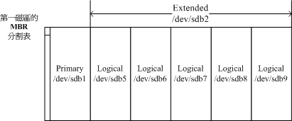

2.2 磁盘分区
这一章在规划的重点是为了要安装Linux，那Linux系统是安装在计算机元件的那个部分呢？就是磁盘啦！所以我们当然要来认识一下磁盘先。 我们知道一块磁盘是可以被分区成多个分区的（partition），以旧有的Windows观点来看，你可能会有一颗磁盘并且将他分区成为C:, D:, E:盘对吧！那个C, D, E就是分区（partition）啰。但是Linux的设备都是以文件的型态存在，那分区的文件名又是什么？ 如何进行磁盘分区？磁盘分区有哪些限制？目前的 BIOS 与 UEFI 分别是啥？MSDOS 与 GPT 又是啥？ 都是我们这个小节所要探讨的内容啰。
2.2.1 磁盘连接的方式与设备文件名的关系
由第零章提到的磁盘说明，我们知道个人计算机常见的磁盘接口有两种， 分别是SATA与SAS接口，目前（2015）的主流是SATA接口。不过更老旧的计算机则有可能是已经不再流行的IDE界面喔！ 以前的IDE界面与SATA界面在Linux的磁盘代号并不相同，不过近年来为了统一处理，大部分Linux distribution已经将IDE界面的磁盘文件名也仿真成跟SATA一样了！ 所以你大概不用太担心磁盘设备文件名的问题了！
时代在改变啊～既然IDE界面都可以消失了，那磁盘文件名还有什么可谈的呢？嘿嘿！有啊！如同上一小节谈到的，虚拟化是目前很常见的一项技术， 因此你在使用的机器很可能就是虚拟机，这些虚拟机使用的“虚拟磁盘”并不是正规的磁盘界面！这种情况下面，你的磁盘文件名就不一样了！ 正常的实体机器大概使用的都是 /dev/sd[a-] 的磁盘文件名，至于虚拟机环境下面，为了加速，可能就会使用 /dev/vd[a-p] 这种设备文件名喔！ 因此在实际处理你的系统时，可能得要了解为啥会有两种不同磁盘文件名的原因才好！
例题：假设你的主机为虚拟机，里面仅有一颗VirtIO接口的磁盘，请问他在Linux操作系统里面的设备文件名为何？答：参考 2.1.3 小节的介绍，虚拟机使用 VirtIO 界面时，磁盘文件名应该是 /dev/vda 才对！
再以SATA接口来说，由于SATA/USB/SAS等磁盘接口都是使用SCSI模块来驱动的， 因此这些接口的磁盘设备文件名都是/dev/sd[a-p]的格式。 所以SATA/USB接口的磁盘根本就没有一定的顺序，那如何决定他的设备文件名呢？ 这个时候就得要根据Linux核心侦测到磁盘的顺序了！这里以下面的例子来让你了解啰。
例题：如果你的PC上面有两个SATA磁盘以及一个USB磁盘，而主板上面有六个SATA的插槽。这两个SATA磁盘分别安插在主板上的SATA1, SATA5插槽上， 请问这三个磁盘在Linux中的设备文件名为何？答：由于是使用侦测到的顺序来决定设备文件名，并非与实际插槽代号有关，因此设备的文件名如下：
- SATA1插槽上的文件名：/dev/sda
- SATA5插槽上的文件名：/dev/sdb
- USB磁盘（开机完成后才被系统捉到）：/dev/sdc
通过上面的介绍后，你应该知道了在Linux系统下的各种不同接口的磁盘的设备文件名了。 OK！好像没问题了呦！才不是呢～问题很大呦！ 因为如果你的磁盘被分区成两个分区，那么每个分区的设备文件名又是什么？在了解这个问题之前，我们先来复习一下磁盘的组成， 因为现今磁盘的分区与他物理的组成很有关系！
我们在计算机概论谈过磁盘的组成主要有盘片、机械手臂、磁头与主轴马达所组成， 而数据的写入其实是在盘片上面。盘片上面又可细分出扇区（Sector）与磁道（Track）两种单位， 其中扇区的物理量设计有两种大小，分别是 512Bytes 与 4KBytes。假设磁盘只有一个盘片，那么盘片有点像下面这样：
 图2.2.1、盘片组成示意图
图2.2.1、盘片组成示意图
那么是否每个扇区都一样重要呢？其实整颗磁盘的第一个扇区特别的重要，因为他记录了整颗磁盘的重要信息！ 早期磁盘第一个扇区里面含有的重要信息我们称为MBR （Master Boot Record） 格式，但是由于近年来磁盘的容量不断扩大，造成读写上的一些困扰， 甚至有些大于 2TB 以上的磁盘分区已经让某些操作系统无法存取。因此后来又多了一个新的磁盘分区格式，称为 GPT （GUID partition table）！ 这两种分区格式与限制不太相同啦！
那么分区表又是啥？其实你刚刚拿到的整颗硬盘就像一根原木，你必须要在这根原木上面切割出你想要的区段， 这个区段才能够再制作成为你想要的家具！如果没有进行切割，那么原木就不能被有效的使用。 同样的道理，你必须要针对你的硬盘进行分区，这样硬盘才可以被你使用的！
2.2.2 MSDOS（MBR） 与 GPT 磁盘分区表（partition table）
但是硬盘总不能真的拿锯子来切切割割吧？那硬盘还真的是会坏掉去！那怎办？在前一小节的图示中， 我们有看到“开始与结束磁道”吧？而通常磁盘可能有多个盘片，所有盘片的同一个磁道我们称为柱面 （Cylinder）， 通常那是文件系统的最小单位，也就是分区的最小单位啦！为什么说“通常”呢？因为近来有 GPT 这个可达到 64bit 纪录功能的分区表， 现在我们甚至可以使用扇区 （sector） 号码来作为分区单位哩！厉害了！ 所以说，我们就是利用参考对照柱面或扇区号码的方式来处理啦！
也就是说，分区表其实目前有两种格式喔！我们就依序来谈谈这两种分区表格式吧。
- MSDOS （MBR） 分区表格式与限制
早期的 Linux 系统为了相容于 Windows 的磁盘，因此使用的是支持 Windows 的 MBR（Master Boot Record, 主要开机纪录区） 的方式来处理开机管理程序与分区表！而开机管理程序纪录区与分区表则通通放在磁盘的第一个扇区， 这个扇区通常是 512Bytes 的大小 （旧的磁盘扇区都是 512Bytes 喔！），所以说，第一个扇区 512Bytes 会有这两个数据：
- 主要开机记录区（Master Boot Record, MBR）：可以安装开机管理程序的地方，有446 Bytes
- 分区表（partition table）：记录整颗硬盘分区的状态，有64 Bytes
由于分区表所在区块仅有64 Bytes容量，因此最多仅能有四组记录区，每组记录区记录了该区段的启始与结束的柱面号码。 若将硬盘以长条形来看，然后将柱面以直条图来看，那么那64 Bytes的记录区段有点像下面的图示：
 图2.2.2、磁盘分区表的作用示意图
图2.2.2、磁盘分区表的作用示意图
假设上面的硬盘设备文件名为/dev/sda时，那么这四个分区在Linux系统中的设备文件名如下所示， 重点在于文件名后面会再接一个数字，这个数字与该分区所在的位置有关喔！
- P1:/dev/sda1
- P2:/dev/sda2
- P3:/dev/sda3
- P4:/dev/sda4
上图中我们假设硬盘只有400个柱面，共分区成为四个分区，第四个分区所在为第301到400号柱面的范围。 当你的操作系统为Windows时，那么第一到第四个分区的代号应该就是C, D, E, F。当你有数据要写入F盘时， 你的数据会被写入这颗磁盘的301~400号柱面之间的意思。
由于分区表就只有64 Bytes而已，最多只能容纳四笔分区的记录， 这四个分区的记录被称为主要（Primary）或延伸（Extended）分区。 根据上面的图示与说明，我们可以得到几个重点信息：
- 其实所谓的“分区”只是针对那个64 Bytes的分区表进行设置而已！
- 硬盘默认的分区表仅能写入四组分区信息
- 这四组分区信息我们称为主要（Primary）或延伸（Extended）分区
- 分区的最小单位“通常”为柱面（cylinder）
- 当系统要写入磁盘时，一定会参考磁盘分区表，才能针对某个分区进行数据的处理
咦！你会不会突然想到，为啥要分区啊？基本上你可以这样思考分区的角度：
数据的安全性： 因为每个分区的数据是分开的！所以，当你需要将某个分区的数据重整时，例如你要将计算机中Windows的C 盘重新安装一次系统时， 可以将其他重要数据移动到其他分区，例如将邮件、桌面数据移动到D 盘去，那么C 盘重灌系统并不会影响到D 盘！ 所以善用分区，可以让你的数据更安全。
系统的性能考虑： 由于分区将数据集中在某个柱面的区段，例如上图当中第一个分区位于柱面号码1~100号，如此一来当有数据要读取自该分区时， 磁盘只会搜寻前面1~100的柱面范围，由于数据集中了，将有助于数据读取的速度与性能！所以说，分区是很重要的！
既然分区表只有记录四组数据的空间，那么是否代表我一颗硬盘最多只能分区出四个分区？当然不是啦！有经验的朋友都知道， 你可以将一颗硬盘分区成十个以上的分区的！那又是如何达到的呢？在Windows/Linux系统中， 我们是通过刚刚谈到的延伸分区（Extended）的方式来处理的啦！延伸分区的想法是： 既然第一个扇区所在的分区表只能记录四笔数据， 那我可否利用额外的扇区来记录更多的分区信息？实际上图示有点像下面这样：
 图2.2.3、磁盘分区表的作用示意图
图2.2.3、磁盘分区表的作用示意图
Tips 实际上延伸分区并不是只占一个区块，而是会分佈在每个分区的最前面几个扇区来记载分区信息的！只是为了方便读者记忆， 鸟哥在上图就将他简化了！有兴趣的读者可以到下面的链接瞧一瞧实际延伸分区的纪录方式： http://en.wikipedia.org/wiki/Extended_boot_record
在上图当中，我们知道硬盘的四个分区记录区仅使用到两个，P1为主要分区，而P2则为延伸分区。请注意， 延伸分区的目的是使用额外的扇区来记录分区信息，延伸分区本身并不能被拿来格式化。 然后我们可以通过延伸分区所指向的那个区块继续作分区的记录。
如上图右下方那个区块有继续分区出五个分区， 这五个由延伸分区继续切出来的分区，就被称为逻辑分区（logical partition）。 同时注意一下，由于逻辑分区是由延伸分区继续分区出来的，所以他可以使用的柱面范围就是延伸分区所设置的范围喔！ 也就是图中的101~400啦！
同样的，上述的分区在Linux系统中的设备文件名分别如下：
- P1:/dev/sda1
- P2:/dev/sda2
- L1:/dev/sda5
- L2:/dev/sda6
- L3:/dev/sda7
- L4:/dev/sda8
- L5:/dev/sda9
仔细看看，怎么设备文件名没有/dev/sda3与/dev/sda4呢？因为前面四个号码都是保留给Primary或Extended用的嘛！ 所以逻辑分区的设备名称号码就由5号开始了！这在 MBR 方式的分区表中是个很重要的特性，不能忘记喔！
MBR 主要分区、延伸分区与逻辑分区的特性我们作个简单的定义啰：
- 主要分区与延伸分区最多可以有四笔（硬盘的限制）
- 延伸分区最多只能有一个（操作系统的限制）
- 逻辑分区是由延伸分区持续切割出来的分区；
- 能够被格式化后，作为数据存取的分区为主要分区与逻辑分区。延伸分区无法格式化；
- 逻辑分区的数量依操作系统而不同，在Linux系统中SATA硬盘已经可以突破63个以上的分区限制；
事实上，分区是个很麻烦的东西，因为他是以柱面为单位的“连续”磁盘空间， 且延伸分区又是个类似独立的磁盘空间，所以在分区的时候得要特别注意。我们举下面的例子来解释一下好了：
例题：在Windows操作系统当中，如果你想要将D与E盘整合成为一个新的分区，而如果有两种分区的情况如下图所示， 图中的特殊颜色区块为D与E盘的示意，请问这两种方式是否均可将D与E整合成为一个新的分区？
 图2.2.4、磁盘空间整合示意图答：
图2.2.4、磁盘空间整合示意图答：
上图可以整合：因为上图的D与E同属于延伸分区内的逻辑分区，因此只要将两个分区删除，然后再重新创建一个新的分区， 就能够在不影响其他分区的情况下，将两个分区的容量整合成为一个。
下图不可整合：因为D与E分属主分区与逻辑分区，两者不能够整合在一起。除非将延伸分区破坏掉后再重新分区。 但如此一来会影响到所有的逻辑分区，要注意的是：如果延伸分区被破坏，所有逻辑分区将会被删除。 因为逻辑分区的信息都记录在延伸分区里面嘛！
由于第一个扇区所记录的分区表与MBR是这么的重要，几乎只要读取硬盘都会先由这个扇区先读起。 因此，如果整颗硬盘的第一个扇区（就是MBR与partition table所在的扇区）物理实体坏掉了，那这个硬盘大概就没有用了！ 因为系统如果找不到分区表，怎么知道如何读取柱面区间呢？您说是吧！下面还有一些例题您可以思考看看：
例题：如果我想将一颗大硬盘“暂时”分区成为四个partitions，同时还有其他的剩余容量可以让我在未来的时候进行规划， 我能不能分区出四个Primary？若不行，那么你建议该如何分区？答：
由于Primary+Extended最多只能有四个，其中Extended最多只能有一个，这个例题想要分区出四个分区且还要预留剩余容量， 因此P+P+P+P的分区方式是不适合的。因为如果使用到四个P，则即使硬盘还有剩余容量， 因为无法再继续分区，所以剩余容量就被浪费掉了。
假设你想要将所有的四笔记录都花光，那么P+P+P+E是比较适合的。所以可以用的四个partitions有3个主要及一个逻辑分区， 剩余的容量在延伸分区中。
如果你要分区超过4个以上时，一定要有Extended分区，而且必须将所有剩下的空间都分配给Extended， 然后再以logical的分区来规划Extended的空间。 另外，考虑到磁盘的连续性，一般建议将Extended的柱面号码分配在最后面的柱面内。
例题：假如我的PC有两颗SATA硬盘，我想在第二颗硬盘分区出6个可用的分区（可以被格式化来存取数据之用）， 那每个分区在Linux系统下的设备文件名为何？且分区类型各为何？至少写出两种不同的分区方式。答：由于P（primary）+E（extended）最多只能有四个，其中E最多只能有一个。现在题目要求6个可用的分区，因此不可能分出四个P。 下面我们假设两种环境，一种是将前四号全部用完，一种是仅花费一个P及一个E的情况：
P+P+P+E的环境：
 图2.2.5、分区示意图实际可用的是/dev/sdb1, /dev/sdb2, /dev/sdb3, /dev/sdb5, /dev/sdb6, /dev/sdb7这六个，至于/dev/sdb4这个延伸分区本身仅是提供来给逻辑分区创建之用。
图2.2.5、分区示意图实际可用的是/dev/sdb1, /dev/sdb2, /dev/sdb3, /dev/sdb5, /dev/sdb6, /dev/sdb7这六个，至于/dev/sdb4这个延伸分区本身仅是提供来给逻辑分区创建之用。P+E的环境： 图2.2.6、分区示意图注意到了吗？因为1~4号是保留给主要/延伸分区的，因此第一个逻辑分区一定是由5号开始的！再次强调啊！ 所以/dev/sdb3, /dev/sdb4就会被保留下来没有用到了！
MBR 分区表除了上述的主分区、延伸分区、逻辑分区需要注意之外，由于每组分区表仅有 16Bytes 而已，因此可纪录的信息真的是相当有限的！ 所以，在过去 MBR 分区表的限制中经常可以发现如下的问题：
- 操作系统无法抓取到 2.2T 以上的磁盘容量！
- MBR 仅有一个区块，若被破坏后，经常无法或很难救援。
- MBR 内的存放开机管理程序的区块仅 446Bytes，无法容纳较多的程序码。
这个 2.2TB 限制的现象在早期并不会很严重。但是，近年来硬盘厂商动不对推出的磁盘容量就高达好几个 TB 的容量！目前 （2015） 单一磁盘最大容量甚至高达 8TB 了！ 如果使用磁盘阵列的系统，像鸟哥的一组系统中，用了 24 颗 4TB 磁盘搭建出磁盘阵列，那在 Linux 下面就会看到有一颗 70TB 左右的磁盘！ 如果使用 MBR 的话...那得要 2TB/2TB 的割下去，虽然 Linux kernel 现在已经可以通过某些机制让磁盘分区高过 63 个以上，但是这样就得要割出将近 40 个分区～ 真要命... 为了解决这个问题，所以后来就有 GPT 这个磁盘分区的格式出现了！
- GUID partition table, GPT 磁盘分区表[1]
因为过去一个扇区大小就是 512Bytes 而已，不过目前已经有 4K 的扇区设计出现！为了相容于所有的磁盘，因此在扇区的定义上面， 大多会使用所谓的逻辑区块位址（Logical Block Address, LBA）来处理。GPT 将磁盘所有区块以此 LBA（默认为 512Bytes 喔！） 来规划，而第一个 LBA 称为 LBA0 （从 0 开始编号）。
与 MBR 仅使用第一个 512Bytes 区块来纪录不同， GPT 使用了 34 个 LBA 区块来纪录分区信息！同时与过去 MBR 仅有一的区块，被干掉就死光光的情况不同， GPT 除了前面 34 个 LBA 之外，整个磁盘的最后 33 个 LBA 也拿来作为另一个备份！这样或许会比较安全些吧！详细的结构有点像下面的模样：
 图2.2.7、GPT 分区表的结构示意图
图2.2.7、GPT 分区表的结构示意图
上述图示的解释说明如下：
LBA0 （MBR 相容区块）
与 MBR 模式相似的，这个相容区块也分为两个部份，一个就是跟之前 446 Bytes 相似的区块，储存了第一阶段的开机管理程序！ 而在原本的分区表的纪录区内，这个相容模式仅放入一个特殊标志的分区，用来表示此磁盘为 GPT 格式之意。而不懂 GPT 分区表的磁盘管理程序， 就不会认识这颗磁盘，除非用户有特别要求要处理这颗磁盘，否则该管理软件不能修改此分区信息，进一步保护了此磁盘喔！
LBA1 （GPT 表头纪录）
这个部份纪录了分区表本身的位置与大小，同时纪录了备份用的 GPT 分区 （就是前面谈到的在最后 34 个 LBA 区块） 放置的位置， 同时放置了分区表的检验机制码 （CRC32），操作系统可以根据这个检验码来判断 GPT 是否正确。若有错误，还可以通过这个纪录区来取得备份的 GPT（磁盘最后的那个备份区块） 来恢复 GPT 的正常运行！
LBA2-33 （实际纪录分区信息处）
从 LBA2 区块开始，每个 LBA 都可以纪录 4 笔分区纪录，所以在默认的情况下，总共可以有 432 = 128 笔分区纪录喔！因为每个 LBA 有 512Bytes，因此每笔纪录用到 128 Bytes 的空间，除了每笔纪录所需要的识别码与相关的纪录之外，GPT 在每笔纪录中分别提供了 64bits 来记载开始/结束的扇区号码，因此，GPT 分区表对於单一分区来说， 他的最大容量限制就会在“ 264 512Bytes = 263 1KBytes = 233TB = 8 ZB ”，要注意 1ZB = 230TB 啦！ 你说有没有够大了？
现在 GPT 分区默认可以提供多达 128 笔纪录，而在 Linux 本身的核心设备纪录中，针对单一磁盘来说，虽然过去最多只能到达 15 个分区，不过由于 Linux kernel 通过 udev 等方式的处理，现在 Linux 也已经没有这个限制在了！ 此外，GPT 分区已经没有所谓的主、延伸、逻辑分区的概念，既然每笔纪录都可以独立存在， 当然每个都可以视为是主分区！每一个分区都可以拿来格式化使用喔！
Tips 鸟哥一直以为核心认识的设备主要/次要号码就一定是连续的，因此一直没有注意到由于新的机制的关系，分区已经可以突破核心限制的状况！ 感谢大陆网友微博代号“学习日记博客”的提醒！此外，为了查询正确性，鸟哥还真的有注意到网络上有朋友实际拿一颗磁盘分区出 130 个以上的分区， 结果他发现 120 个以前的分区均可以格式化使用，但是 130 之后的似乎不太能够使用了！或许跟默认的 GPT 共 128 个号码有关！
虽然新版的 Linux 大多认识了 GPT 分区表，没办法，我们 server 常常需要比较大容量的磁盘嘛！不过，在磁盘管理工具上面， fdisk 这个老牌的软件并不认识 GPT 喔！要使用 GPT 的话，得要操作类似 gdisk 或者是 parted 指令才行！这部份我们会在第二篇再来谈一谈。 另外，开机管理程序方面， grub 第一版并不认识 GPT 喔！得要 grub2 以后才会认识的！开机管理程序这部份则第五篇再来谈喔！
并不是所有的操作系统都可以读取到 GPT 的磁盘分区格式喔！同时，也不是所有的硬件都可以支持 GPT 格式喔！是否能够读写 GPT 格式又与开机的检测程序有关！ 那开机的检测程序又分成啥鬼东西呢？就是 BIOS 与 UEFI 啦！那这两个又是啥东西？就让我们来聊一聊！
2.2.3 开机流程中的 BIOS 与 UEFI 开机检测程序
我们在计算机概论里面谈到了，没有执行软件的硬件是没有用的，除了会电人之外...， 而为了计算机硬件系统的资源合理分配，因此有了操作系统这个系统软件的产生。由于操作系统会控制所有的硬件并且提供核心功能， 因此我们的计算机就能够认识硬盘内的文件系统，并且进一步的读取硬盘内的软件文件与执行该软件来达成各项软件的执行目的。
问题是，你有没有发现，既然操作系统也是软件，那么我的计算机又是如何认识这个操作系统软件并且执行他的？ 明明开机时我的计算机还没有任何软件系统，那他要如何读取硬盘内的操作系统文件啊？嘿嘿！这就得要牵涉到计算机的开机程序了！ 下面就让我们来谈一谈这个开机程序吧！
基本上，目前的主机系统在载入硬件驱动方面的程序，主要有早期的 BIOS 与新的 UEFI 两种机制，我们分别来谈谈啰！
- BIOS 搭配 MBR/GPT 的开机流程
在计算机概论里面我们有谈到那个可爱的BIOS与CMOS两个东西， CMOS是记录各项硬件参数且嵌入在主板上面的储存器，BIOS则是一个写入到主板上的一个固件（再次说明， 固件就是写入到硬件上的一个软件程序）。这个BIOS就是在开机的时候，计算机系统会主动执行的第一个程序了！
接下来BIOS会去分析计算机里面有哪些储存设备，我们以硬盘为例，BIOS会依据使用者的设置去取得能够开机的硬盘， 并且到该硬盘里面去读取第一个扇区的MBR位置。 MBR这个仅有446 Bytes的硬盘容量里面会放置最基本的开机管理程序， 此时BIOS就功成圆满，而接下来就是MBR内的开机管理程序的工作了。
这个开机管理程序的目的是在载入（load）核心文件， 由于开机管理程序是操作系统在安装的时候所提供的，所以他会认识硬盘内的文件系统格式，因此就能够读取核心文件， 然后接下来就是核心文件的工作，开机管理程序与 BIOS 也功成圆满，将之后的工作就交给大家所知道的操作系统啦！
简单的说，整个开机流程到操作系统之前的动作应该是这样的：
- BIOS：开机主动执行的固件，会认识第一个可开机的设备；
- MBR：第一个可开机设备的第一个扇区内的主要开机记录区块，内含开机管理程序；
- 开机管理程序（boot loader）：一支可读取核心文件来执行的软件；
- 核心文件：开始操作系统的功能...
第二点要注意，如果你的分区表为 GPT 格式的话，那么 BIOS 也能够从 LBA0 的 MBR 相容区块读取第一阶段的开机管理程序码， 如果你的开机管理程序能够认识 GPT 的话，那么使用 BIOS 同样可以读取到正确的操作系统核心喔！换句话说， 如果开机管理程序不懂 GPT ，例如 Windows XP 的环境，那自然就无法读取核心文件，开机就失败了！
Tips 由于 LBA0 仅提供第一阶段的开机管理程序码，因此如果你使用类似 grub 的开机管理程序的话，那么就得要额外分区出一个“ BIOS boot ”的分区， 这个分区才能够放置其他开机过程所需的程序码！在 CentOS 当中，这个分区通常占用 2MB 左右而已。
由上面的说明我们会知道，BIOS与MBR都是硬件本身会支持的功能，至于Boot loader则是操作系统安装在MBR上面的一套软件了。由于MBR仅有446 Bytes而已，因此这个开机管理程序是非常小而美的。 这个boot loader的主要任务有下面这些项目：
- 提供菜单：使用者可以选择不同的开机项目，这也是多重开机的重要功能！
- 载入核心文件：直接指向可开机的程序区段来开始操作系统；
- 转交其他loader：将开机管理功能转交给其他loader负责。
上面前两点还容易理解，但是第三点很有趣喔！那表示你的计算机系统里面可能具有两个以上的开机管理程序呢！ 有可能吗？我们的硬盘不是只有一个MBR而已？是没错啦！但是开机管理程序除了可以安装在MBR之外， 还可以安装在每个分区的开机扇区（boot sector）喔！瞎密？分区还有各别的开机扇区喔？ 没错啊！这个特色才能造就“多重开机”的功能啊！
我们举一个例子来说，假设你的个人计算机只有一个硬盘，里面切成四个分区，其中第一、二分区分别安装了Windows及Linux， 你要如何在开机的时候选择用Windows还是Linux开机呢？假设MBR内安装的是可同时认识Windows/Linux操作系统的开机管理程序， 那么整个流程可以图示如下：
 图2.2.8、开机管理程序的工作执行示意图
图2.2.8、开机管理程序的工作执行示意图
在上图中我们可以发现，MBR的开机管理程序提供两个菜单，菜单一（M1）可以直接载入Windows的核心文件来开机； 菜单二（M2）则是将开机管理工作交给第二个分区的开机扇区（boot sector）。当使用者在开机的时候选择菜单二时， 那么整个开机管理工作就会交给第二分区的开机管理程序了。 当第二个开机管理程序启动后，该开机管理程序内（上图中）仅有一个开机菜单，因此就能够使用Linux的核心文件来开机啰。 这就是多重开机的工作情况啦！我们将上图作个总结：
- 每个分区都拥有自己的开机扇区（boot sector）
- 图中的系统盘为第一及第二分区，
- 实际可开机的核心文件是放置到各分区内的！
- loader只会认识自己的系统盘内的可开机核心文件，以及其他loader而已；
- loader可直接指向或者是间接将管理权转交给另一个管理程序。
那现在请你想一想，为什么人家常常说：“如果要安装多重开机， 最好先安装Windows再安装Linux”呢？这是因为：
Linux在安装的时候，你可以选择将开机管理程序安装在MBR或各别分区的开机扇区， 而且Linux的loader可以手动设置菜单（就是上图的M1, M2...），所以你可以在Linux的boot loader里面加入Windows开机的选项；
Windows在安装的时候，他的安装程序会主动的覆盖掉MBR以及自己所在分区的开机扇区，你没有选择的机会， 而且他没有让我们自己选择菜单的功能。
因此，如果先安装Linux再安装Windows的话，那MBR的开机管理程序就只会有Windows的项目，而不会有Linux的项目 （因为原本在MBR内的Linux的开机管理程序就会被覆盖掉）。 那需要重新安装Linux一次吗？当然不需要，你只要用尽各种方法来处理MBR的内容即可。 例如利用Linux的救援模式来挽救MBR啊！
Tips 开机管理程序与Boot sector的观念是非常重要的，我们会在第十九章分别介绍，您在这里只要先对于（1）开机需要开机管理程序， 而（2）开机管理程序可以安装在MBR及Boot Sector两处这两个观念有基本的认识即可， 一开始就背太多东西会很混乱啦！
- UEFI BIOS 搭配 GPT 开机的流程 [2]
我们现在知道 GPT 可以提供到 64bit 的寻址，然后也能够使用较大的区块来处理开机管理程序。但是 BIOS 其实不懂 GPT 耶！还得要通过 GPT 提供相容模式才能够读写这个磁盘设备～而且 BIOS 仅为 16 位的程序，在与现阶段新的操作系统接轨方面有点弱掉了！ 为了解决这个问题，因此就有了 UEFI （Unified Extensible Firmware Interface） 这个统一可延伸固件界面的产生。
UEFI 主要是想要取代 BIOS 这个固件界面，因此我们也称 UEFI 为 UEFI BIOS 就是了。UEFI 使用 C 程序语言，比起使用组合语言的传统 BIOS 要更容易开发！也因为使用 C 语言来撰写，因此如果开发者够厉害，甚至可以在 UEFI 开机阶段就让该系统了解 TCP/IP 而直接上网！ 根本不需要进入操作系统耶！这让小型系统的开发充满各式各样的可能性！
基本上，传统 BIOS 与 UEFI 的差异可以用T客帮杂志汇整的表格来说明：
| 比较项目 | 传统 BIOS | UEFI |
|---|---|---|
| 使用程序语言 | 组合语言 | C 语言 |
| 硬件资源控制 | 使用中断 （IRQ） 管理 不可变的内存存取 不可变得输入/输出存取 | 使用驱动程序与协定 |
| 处理器运行环境 | 16 位 | CPU 保护模式 |
| 扩充方式 | 通过 IRQ 链接 | 直接载入驱动程序 |
| 第三方厂商支持 | 较差 | 较佳且可支持多平台 |
| 图形化能力 | 较差 | 较佳 |
| 内置简化操作系统前环境 | 不支持 | 支持 |
从上头我们可以发现，与传统的 BIOS 不同，UEFI 简直就像是一个低阶的操作系统～甚至于连主板上面的硬件资源的管理， 也跟操作系统相当类似，只需要载入驱动程序即可控制操作。同时由于程控得宜，一般来说，使用 UEFI 接口的主机，在开机的速度上要比 BIOS 来的快上许多！ 因此很多人都觉得 UEFI 似乎可以发展成为一个很有用的操作系统耶～不过，关于这个，你无须担心未来除了 Linux 之外，还得要增加学一个 UEFI 的操作系统啦！为啥呢？
UEFI 当初在发展的时候，就制定一些控制在里头，包括硬件资源的管理使用轮询 （polling） 的方式来管理，与 BIOS 直接了解 CPU 以中断的方式来管理比较， 这种 polling 的效率是稍微慢一些的，另外，UEFI 并不能提供完整的高速缓存功能，因此执行效率也没有办法提升。不过由于载入所有的 UEFI 驱动程序之后， 系统会打开一个类似操作系统的 shell 环境，使用者可以此环境中执行任意的 UEFI 应用程序，而且效果比 MSDOS 更好哩。
所以啰，因为效果华丽但性能不佳，因此这个 UEFI 大多用来作为启动操作系统之前的硬件检测、开机管理、软件设置等目的，基本上是比较难的。 同时，当载入操作系统后，一般来说，UEFI 就会停止工作，并将系统交给操作系统，这与早期的 BIOS 差异不大。比较特别的是，某些特定的环境下， 这些 UEFI 程序是可以部份继续执行的，以协助某些操作系统无法找到特定设备时，该设备还是可以持续运行。
此外，由于过去 cracker 经常借由 BIOS 开机阶段来破坏系统，并取得系统的控制权，因此 UEFI 加入了一个所谓的安全启动 （secure boot） 机制， 这个机制代表着即将开机的操作系统必须要被 UEFI 所验证，否则就无法顺利开机！微软用了很多这样的机制来管理硬件。 不过加入这个机制后，许多的操作系统，包括 Linux ，就很有可能无法顺利开机喔！所以，某些时刻，你可能得要将 UEFI 的 secure boot 功能关闭， 才能够顺利的进入 Linux 哩！ （这一点让自由软件工作者相当感冒啦！）
另外，与 BIOS 模式相比，虽然 UEFI 可以直接取得 GPT 的分区表，不过最好依旧拥有 BIOS boot 的分区支持， 同时，为了与 windows 相容，并且提供其他第三方厂商所使用的 UEFI 应用程序储存的空间，你必须要格式化一个 vfat 的文件系统， 大约提供 512MB 到 1G 左右的容量，以让其他 UEFI 执行较为方便。
Tips 由于 UEFI 已经克服了 BIOS 的 1024 柱面的问题，因此你的开机管理程序与核心可以放置在磁盘开始的前 2TB 位置内即可！加上之前提到的 BIOS boot 以及 UEFI 支持的分区，基本上你的 /boot 目录几乎都是 /dev/sda3 之后的号码了！这样开机还是没有问题的！所以要注意喔！与以前熟悉的分区状况已经不同， /boot 不再是 /dev/sda1 啰！很有趣吧！
2.2.4 Linux安装模式下，磁盘分区的选择（极重要）
在 windows 系统重灌之前，你可能都会事先考虑，到底系统盘 C 盘要有多少容量？而数据碟 D 盘又要给多大容量等等， 然后实际安装的时候，你会发现到其实 C 盘之前会有个 100MB 的分区被独立出来～所以实际上你就会有三个分区就是了。那 Linux 下面又该如何设计类似的东西呢？
- 目录树结构 （directory tree）
我们前面有谈过Linux内的所有数据都是以文件的形态来呈现的，所以啰，整个Linux系统最重要的地方就是在于目录树架构。 所谓的目录树架构（directory tree）就是以根目录为主，然后向下呈现分支状的目录结构的一种文件架构。 所以，整个目录树架构最重要的就是那个根目录（root directory），这个根目录的表示方法为一条斜线“/”， 所有的文件都与目录树有关。目录树的呈现方式如下图所示：
 图2.2.9、目录树相关性示意图
图2.2.9、目录树相关性示意图
如上图所示，所有的文件都是由根目录（/）衍生来的，而次目录之下还能够有其他的数据存在。上图中长方形为目录， 波浪形则为文件。那当我们想要取得mydata那个文件时，系统就得由根目录开始找，然后找到home接下来找到dmtsai， 最终的文件名为：/home/dmtsai/mydata的意思。
我们现在知道整个Linux系统使用的是目录树架构，但是我们的文件数据其实是放置在磁盘分区当中的， 现在的问题是“如何结合目录树的架构与磁盘内的数据”呢？ 这个时候就牵扯到“挂载（mount）”的问题啦！
- 文件系统与目录树的关系（挂载）
所谓的“挂载”就是利用一个目录当成进入点，将磁盘分区的数据放置在该目录下； 也就是说，进入该目录就可以读取该分区的意思。这个动作我们称为“挂载”，那个进入点的目录我们称为“挂载点”。 由于整个Linux系统最重要的是根目录，因此根目录一定需要挂载到某个分区的。 至于其他的目录则可依使用者自己的需求来给予挂载到不同的分区。我们以下图来作为一个说明：
 图2.2.10、目录树与分区之间的相关性
图2.2.10、目录树与分区之间的相关性
上图中假设我的硬盘分为两个分区，partition 1是挂载到根目录，至于partition 2则是挂载到/home这个目录。 这也就是说，当我的数据放置在/home内的各次目录时，数据是放置到partition 2的，如果不是放在/home下面的目录， 那么数据就会被放置到partition 1了！
Tips windows 也是用挂载的观念啊！鸟哥上课经常谈到的范例就是，当你拿 USB 磁盘放置到你的 windows 时，系统会侦测到一个 F 盘好了， 那你想要读取 USB 的数据，要去哪里啊？当然就去 F 啰！同样的这颗 USB，当你拿到学校的 windows 时，却显示的是 H 盘好了， 那你要读取 USB 的数据还是去 F 盘吗？当然不是，你会去 H 盘啊！这个“设备与磁盘分区对应的关系，就是 windows 概念下的挂载”啦！ 这样说，有没有比较好理解？
其实判断某个文件在那个partition下面是很简单的，通过反向追踪即可。以上图来说， 当我想要知道/home/vbird/test这个文件在哪个partition时，由test --> vbird --> home --> /，看那个“进入点”先被查到那就是使用的进入点了。 所以test使用的是/home这个进入点而不是/喔！
例题：现在让我们来想一想，我的计算机系统如何读取光盘内的数据呢？在Windows里面使用的是“光驱”的代号方式处理（假设为E盘时）， 但在Linux下面我们依旧使用目录树喔！在默认的情况下，Linux是将光驱的数据放置到/media/cdrom里头去的。 如果光盘片里面有个文件文件名为“我的文件”时，那么这个文件是在哪里？答：这个文件最终会在如下的完整文件名中：
- Windows： 桌面\我的计算机\E:\我的文件
- Linux： /media/cdrom/我的文件
如果光驱并非被挂载到/media/cdrom，而是挂载到/mnt这个目录时，刚刚读取的这个文件的文件名会变成：
- /mnt/我的文件
如果你了解这个文件名，这表示你已经知道挂载的意义了！初次接触Linux时，这里最容易搞混，因为他与Windows的分区代号完全不一样！
- distributions安装时，挂载点与磁盘分区的规划：
既然我们在Linux系统下使用的是目录树系统，所以安装的时候自然就得要规划磁盘分区与目录树的挂载了。 实际上，在Linux安装的时候已经提供了相当多的默认模式让你选择分区的方式了， 不过，无论如何，分区的结果可能都不是很能符合自己主机的样子！因为毕竟每个人的“想法”都不太一样！ 因此，强烈建议使用“自订安装, Custom ”这个安装模式！在某些Linux distribution中，会将这个模式写的很厉害，叫做是“Expert, 专家模式”，这个就厉害了， 请相信您自己，了解上面的说明后，就请自称为专家了吧！没有问题！
自订安装“Custom”：
A：初次接触Linux：只要分区“ / ”及“swap”即可：
通常初次安装Linux系统的朋友们，我们都会建议他直接以一个最大的分区“ / ”来安装系统。 这样作有个好处，就是不怕分区错误造成无法安装的困境！例如/usr是Linux的可执行程序及相关的文件摆放的目录， 所以他的容量需求蛮大的，万一你分区了一块分区给/usr，但是却给的不够大，那么就伤脑筋了！ 因为会造成无法将数据完全写入的问题，就有可能会无法安装啦！因此如果你是初次安装的话， 那么可以仅分区成两个分区“ / 与 Swap ”即可。
B：建议分区的方法：预留一个备用的剩余磁盘容量！
在想要学习Linux的朋友中，最麻烦的可能就是得要常常处理分区的问题，因为分区是系统管理员很重要的一个任务。 但如果你将整个硬盘的容量都用光了，那么你要如何练习分区呢？^_^。所以鸟哥在后续的练习中也会这样做， 就是请你特别预留一块不分区的磁盘容量，作为后续练习时可以用来分区之用！
此外，预留的分区也可以拿来做为备份之用。因为我们在实际操作Linux系统的过程中， 可能会发现某些script或者是重要的文件很值得备份时，就可以使用这个剩余的容量分区出新的分区， 并使用来备份重要的配置文件或者是script。这有个最大的好处， 就是当我的Linux重新安装的时候，我的一些软件或工具程序马上就可以直接在硬盘当中找到！呵呵！重新安装比较便利啦。 为什么要重新安装？因为没有安装过Linux十次以上，不要说你学会了Linux了啦！慢慢体会这句话吧！ ^_^
选择Linux安装程序提供的默认硬盘分区方式：
对于首次接触Linux的朋友们，鸟哥通常不建议使用各个distribution所提供默认的Server安装方式， 因为会让你无法得知Linux在搞什么鬼，而且也不见得可以符合你的需求！而且要注意的是， 选择Server的时候，请“确定”你的硬盘数据是不再需要！因为Linux会自动的把你的硬盘里面旧有的数据全部杀掉！
现在你知道Linux为什么不好学了吧？因为很多基础知识都得要先了解！否则连安装都不知道怎么安装～ 现在你知道Linux的可爱了吧！因为如果你学会了，嘿嘿！很多计算机系统/操作系统的概念都很清晰， 转换到不同的信息跑道是比较容易的喔！^_^